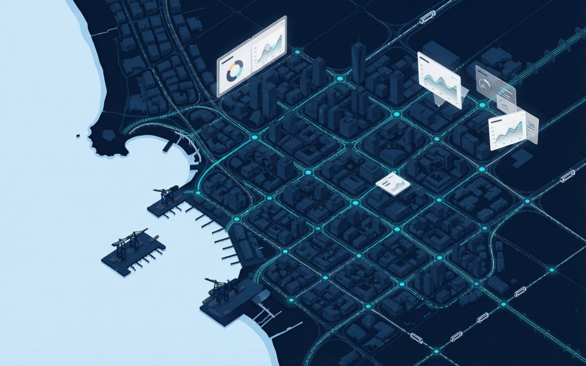

광주오피 호남권 지역별 심층 분석 및 통합 가이드
광주오피 상권의 특징과 호남권 로컬 인프라
광주광역시 호남권 전체의 행정, 문화, 경제를 통합하는 중심 도시로서 독자적이면서도 거대한 상권 데이터베이스를 형성하고 있습니다. 수도권의 서울오피 상권이나 중부권의 대전오피 상권과 마찬가지로 광역 교통망(KTX 호남선, 광주공항, 호남고속도로)을 통해 외부 유동 인구가 유연하게 유입되는 특징이 있습니다.
광주 지역의 정보 생태계는 시청과 법원이 들어선 서구 상무지구를 비롯하여, 첨단 과학 산업단지의 북구 첨단지구, 광산구 수완지구, 그리고 전통 원도심인 동구 구시청·충장로 권역까지 균형 있게 발달해 있습니다.
광주 주요 4대 권역별 심층 탐색 가이드
1. 상무지구 권역 (행정·금융 및 핵심 번화가)
광주광역시청과 주요 금융기관, 언론사가 밀집된 호남 최대의 비즈니스 중심 상권입니다. 24시간 활성화된 상업 시설과 숙박 인프라가 갖추어져 있어, 광주 내에서 가장 많은 이용자 실시간 후기 및 라인업 정보가 공유되는 핵심 구역입니다.
2. 첨단지구·신용동 권역 (첨단 산업 및 연구 단지)
광주첨단과학국가산업단지와 연구기관이 조성된 북구·광산구 경계 상권입니다. 쾌적한 도로망과 신규 편의시설이 다양하게 갖추어져 있어 모바일 정밀 필터링 검색 수요가 지속적으로 증가하는 지역입니다.
3. 수완지구·신가동 권역 (대형 주거 및 신도시 상권)
호남권 최대 규모의 계획 신도시 지역으로, 깔끔한 단지 조성과 상권 편의성이 뛰어납니다. 초보자를 위한 정밀 이용 가이드북 및 직관적인 조건 검색 기능을 활용하기에 매우 적합합니다.
4. 구시청·충장로·광주송정역 권역 (원도심 및 광역 교통 요충지)
문화전당과 패션·유흥 상권이 위치한 동구 원도심과 KTX 광주송정역 일대입니다. 출장 및 광역 방문객들의 정보 검색 비중이 높으며, 도메인 변경 시 신속한 최신주소 확인이 중요합니다.
광주오피 올바른 정보 검증 및 안전한 우회 접속 가이드
광주 지역 정보를 탐색할 때 외부 바이럴 스팸이나 피싱 대피소 사이트로의 접속을 방지하고 안전한 이용 환경을 유지하기 위해 다음 가이드를 확인하세요.
- HTTPS 보안 프로토콜 체크: 접속 도메인의 암호화 인증서(SSL) 적용 상태를 상시 확인합니다.
- 실시간 도메인 차단 대응: 방송통신심의위원회 차단 발생 시 공식 대피소 링크를 갖춘 허브 사이트를 이용합니다.
- 솔직한 유저 리뷰 선별: 무분별한 대행사 홍보 문구보다 실제 경험에 기반한 교차 검증 후기를 참고하는 것이 바람직합니다.

실시간 공식 통합 대표 채널 안내
인터넷 검열 및 도메인 차단으로 접속이 원활하지 않으신가요?
가장 빠르고 안전한 공식 우회 경로를 통해 끊김 없이 이용하실 수 있습니다.